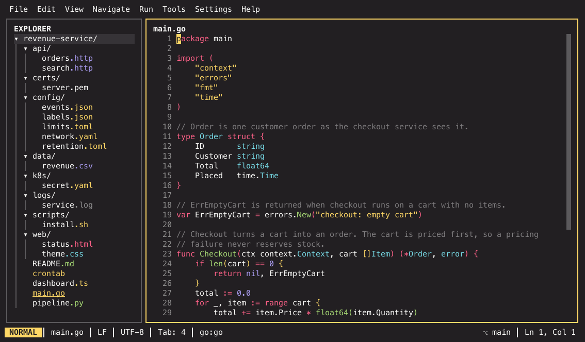

IKE¶
IKE is a terminal IDE: a JetBrains-inspired TUI built with
bubbletea, with vim-like controls
in the editor. It brings the pieces you expect from a desktop IDE into the
terminal — a file explorer, resizable panes with tabs, a command palette,
LSP-powered code intelligence, Tree-sitter highlighting, an integrated
terminal, an HTTP client for .http files, themes, and a plugin system.

Screenshots throughout this site use the monokai-pro theme; twenty-eight
themes ship, and Customising IKE shows how to
switch.
Why it exists¶
It was built for working across a lot of microservice repositories at once. A full IDE has indexing to do before a project is usable, so closing one you will need again shortly is a bad trade — you keep them all open instead, and they all stay resident. Then a surprising share of the day goes into finding the right window among them.
Neovim was the obvious lighter alternative, but assembling a full IDE out of plugins was a bigger project than the one worth solving. So: a terminal IDE shaped like a JetBrains one — the same chords, the same panes and tool windows — with a vim-style editor in the middle.
If you also live in many repositories at once, the part to look at first is project switching: one keystroke, pick from your recent projects, and the whole workspace re-roots in place. No second window, nothing to hunt for.
More on the reasoning, and on what this project is, in About & contributing.
Before you install¶
Your terminal has to cooperate
IKE only works properly in a terminal that supports the Kitty keyboard protocol and has most of its own keybindings disabled. Otherwise the terminal swallows chords before IKE ever sees them — which looks like "the shortcut does nothing" rather than like a configuration problem.
Known-good terminals: Ghostty, kitty, WezTerm, foot, Alacritty, and iTerm2 3.5+. Terminal setup, including a ready-made Ghostty config, is covered in Getting started.
Install¶
IKE is a single Go binary. You need Go 1.26+.
git clone https://github.com/TrueDaerk/ike.git
cd ike
make install # installs to ~/.local/bin/ike
Then run ike in the directory you want to open — the working directory
becomes the project root:
cd ~/src/my-project
ike
Files can also be opened straight from the command line, optionally at a line and column:
ike internal/app/app.go:725 # open at line 725
ike +42 main.go # vim-style line prefix
git log | ike - # pipe stdin into a scratch buffer
Find your way around¶
-
Install, set up your terminal, open your first project, and learn the handful of keys that get you moving.
-
Panes, tabs and layouts; the modal editor; what a "project" means and what IKE remembers between sessions.
-
One page per feature area — search, LSP, the integrated terminal, Git, running and debugging, themes, plugins, and settings.
-
Complete tables of keybindings, settings keys, and palette commands.
Stuck? Troubleshooting collects the failure modes that are worth knowing about — most of them are the terminal, not the IDE.
The short version of the keyboard¶
Everything is reachable from the command palette, so this is all you strictly need to remember:
| Keys | What it does |
|---|---|
| Cmd+Shift+A, or Shift twice | Search everywhere — the command palette; type : for commands, @ to find files |
| Cmd+Shift+O | Go to file |
| Cmd+E | Recent files |
| Cmd+S | Save |
| Cmd+7 | Toggle line comment |
| F10 | Open the menu bar |
| F1 | Help overlay with the full cheatsheet |
The palette has no toggle chord of its own by default; you reach it through
Search everywhere, or bind one with palette.toggle_key.
Cmd or Ctrl?
Chords are written with Cmd throughout this documentation. Off macOS,
IKE maps Cmd to Ctrl at build time, so Cmd+S on macOS is
Ctrl+S on Linux and Windows. Where a chord differs beyond that
mapping, the page says so.
Configuration in one paragraph¶
Settings are TOML, merged as defaults < user < project: your own defaults
live in ~/.ike/settings.toml, per-project overrides in
<project>/.ike/settings.toml. Changes are picked up live — no restart — and
most keys can be edited in the settings panel instead of by hand.
[theme]
name = "tokyo-night"
A note on what this is¶
IKE is a personal project — built by one person, to that person's taste, with heavy AI assistance. The defaults follow a specific JetBrains muscle memory, on a German keyboard, in a specific terminal, because that is the setup it was built for. There is no support promise and no roadmap commitment.
That said: it is public on purpose. Use it if it suits you, and pull requests that improve it are genuinely welcome — see About & contributing. The licence is MIT with the Commons Clause: do what you like with IKE, including building commercial software with it — just do not sell IKE itself.
Looking for the internals?¶
This site documents using IKE. The architecture documentation — one concept
document per subsystem, aimed at contributors — lives in
wiki/ in the
repository, and planning happens in
GitHub issues.